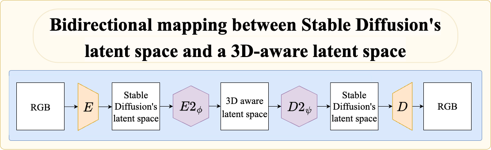

Method
We extend the pipeline of IG-AE and take inspiration from the refinement layers of ED-NeRF to propose a new pipeline named E2D2. Our model circumvents the impossibility to have both the desired properties in the same latent space by constructing one latent space for each property and, a way to go from one latent space to the other. We propose a bidirectional mapping between the latent space of Stable Diffusion and a 3D-aware latent space. Once the E2 and D2 blocks are trained we can encode an RGB image into Stable Diffusion's latent space, map it to a 3D-aware latent space and map it back to Stable Diffusion and then to RGB.Bidirectional mapping between latent spaces

Bidirectional mapping. The figure illustrates the mapping from Stable Diffusion’s latent space to a 3D-aware latent space via 𝐸2𝜙, and the reverse mapping via 𝐷2𝜓. 𝐸 and 𝐷 are respectively Stable Diffusion’s encoder and decoder.
E2D2 Training Pipeline
We propose a .

E2D2 Training. (a) The Autoencoder block in blue enforces the reconstruction of the RGB and latent images. (b) The 3D Regularisation block in red enforces the 3D awareness of E2’s latent space. The NeRF module contains one Tri-Plane per scene; in our experiments we train on 50 scenes, so this block contains 50 Tri-Planes.
Experiments
WeNon 3D-aware latent space of D2
The role of D2 is to map from a 3D-aware latent space to Stable Diffusion's latent space. We can see more flickering effects on the video with outputs of D2 than the one with the outputs of the Tri-Planes (NeRFs). This is encouraging since smoother videos are less prone to flickering so this shows that the latent space before passing through D2 is more 3D-aware.BibTeX
@internshipreport{
e2d2,
title={{Aligning 3D-aware and Stable Diffusion Latent Spaces for Latent NeRFs}},
author={Rémi Calvet, Karim Kassab, Antoine Schnepf, Jean-Yves Franceschi},
year={2025},
type={Internship Report},
url={https://remicsk.github.io}
}